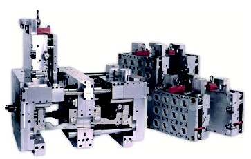
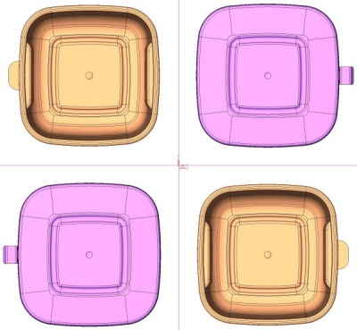
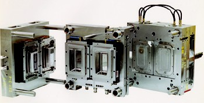
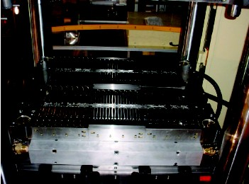
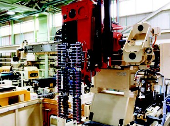

|
GÜÇ
ÜNÝTESÝ
Kuzey
Amerika ve Avrupa gibi büyük sanayi alanlarýnýn bulunduðu
ülkelerde, elektrik güç kaynaklarý, dýþarýda ve sabit olmak
zorundadýr. Özellikle geliþmekte olan ülkeler gibi dünyanýn
bir çok bölgesinde, voltaj dalgalanmalarý, elektrik kablolarýnýn
aþýrý yüklenmesi, sýk karþýlaþýlan bir durumdur. Birkaç saniyelik
voltaj düþmesi, elektriðin kesilip tekrar gelmesi, ve bu olayýn
arka arkaya tekrarlamasý, bazen düþük voltajýn yada elektik
kesintilerinin birkaç saatten fazla sürmesi de mümkündür.
Can
sýkýcý bu durumlar, kalýplarýn durmasýna sebep olduðundan,
ekonomik açýdan pahalý maliyetler oluþturmaktadýr. Voltaj
dalgalanmalarý bazen makinelerin kontrol ünitelerine de zarar
verebilmektedir.
Voltaj
dalgalanmalarý iki sebepten dolayý kalýplamanýn yavaþlamasýna
yada durmasýna neden olur.
Makine kontrol üniteleri, voltaj dalgalanmalarýna duyarlýdýrlar
ve voltaj düzenleyici regülatörlere ihtiyaç duyarlar. Makine
üzerindeki aþýrý voltaj yükü durumunda, koruyucu sigortalar
ve bazý makinelerin içerlerinde bulunan regülatörlere raðmen
dýþarýda, güçlü bir regülatör olmasý, emniyet açýsýndan çok
daha iyidir. Makineler durduklarýnda imalatýmýzda durmuþ demektir.
Genellikle elektronik devreler ortam sýcaklýðýna karþýda hassas
olurlar.
Plastik akýþkan sýcaklýðý: Plastik enjeksiyon makinesi ve
kalýp üzerindeki bütün ýsýtýcýlar, elektrikle çalýþýrlar.
Rezistanslardan alýnan sýcaklýk, elektrik akýmýnýn gerilimine
baðlýdýr. Voltajdaki %10'luk ani bir düþüþ, rezistans ýsýsýnýn
%20 azalmasýna sebep olur. Makine grup memesi (nozzle) rezistanslarý,
termostat kontrollüdür. Isý kontrol cihazlarý sayesinde, rezistanslar
istenilen sýcaklýklar sabit tutulabilir. Sýcak yolluklu kalýplarda,
sýcak yolluk manifoldu, sýcak yolluk memeleri ve termokupullarla
donatýlmýþtýr. Tabi ki maliyetleri artýran sýcak yolluk sistemi,
dýþ ýsý kontrol ünitelerine ihtiyaç duymaktadýr.
KALIP
SEÇÝMÝNDE NELERE DÝKKAT EDÝLMELÝDÝR?
UYGUN
KALIBIN SEÇÝLMESÝ
Ýlk
olarak, iyi bir ürün tasarýmýnýn yapýlmýþ olmasý gerekmektedir.
Daha sonra ürünün nerede üretileceði ve kaç gözlü kalýba ihtiyaç
duyulduðu saptanmalýdýr. Uygun olan deðiþik tüm alternatifler
düþünülüp, tek tek avantajlarý ve dezavantajlarý belirlenmelidir.
TEK
ÜRÜNLÜK KALIPLAR
Tek
ürünlük kalýp demek, kalýp sadece bir ürün için tasarlanmýþ
ve yapýlmýþtýr. Üretimine ara verildiðinde, bir sonraki üretime
kadar depoda muhafaza edilirler. Bu en yaygýn kalýp tipidir.
Ayný atölyede çalýþan 2-8 gözlü, ortak çekirdekleri, pimleri,
maçalarý olan kalýplar yada iç figürleri (çekirdekleri) deðiþen
sürekli baskýda olan, versiyonlu kalýplar bulunabilir. Prensipte,
plastik enjeksiyon atölyesi, depolama þartlarý uygun ve kayýt
iþlemleri düzgün ise, böyle bir tasarýmda hiçbir hatayla karþýlaþýlmayacaktýr.
Bu þekilde yüksek maliyetli birden fazla kalýp yapýmý önlenecek,
tek bir kalýp yapýlacak, gereði kadar iç çekirdeklerden yapýlacaktýr.
Kalýp çekirdek deðiþtirme iþlemi birkaç saat içerisinde bitecektir.
Özellikle
sýk sýk çekirdek deðiþtirmek gerçekten kazanç saðlar mý?
Eðer
enjeksiyon atölyemiz, karmaþýk olmayan, düzenli bir yapýya
sahipse, çekirdekleri deðiþtirilebilir kalýplar, tek ürünlük
kalýplara kýyasla oldukça güvenli ve ekonomik olacaktýr.

Resim 3: 4 farklý çekirdeði olan bir kalýp (Firma: Stackteck)
Birbirine
benzer ürünlerin kalýp çekirdekleri kolaylýkla deðiþ tokuþ
edilir ki bu oldukça ekonomik bir çözümdür. Örneðin bir tabure
kalýbý yaptýnýz. Orta desen için 4 ayrý çekirdek iþlettiniz.
Ýstenen desenden, sadece çekirdekleri deðiþtirerek, baský
almak mümkündür. Ýlave iþlenen 3 çekirdek, bizi 3 yeni kalýp
maliyetinden kurtarýr.
0,25lt'den
1 lt'ye kadar, ölçüleri (en, boy) ayný, fakat derinlikleri
farklý olan 4 yada 6 farklý boy konteynýr serisini örnek olarak
ele alalým. Bu tip kalýplar, tek ürünlük kalýplara göre büyük
avantajlar saðlamaktadýr. Çoklu kalýplar genellikle en küçük
ürün baz alýnarak tasarlanýrlar. Tasarýmlarýnda özellikle
ürünün kalýptan çýkarýlmasýna dikkat etmek gereklidir. Her
bir ürün için ayrý sýyýrýcý yada itici plakalarý yapmak gerekebilir.
Düþük çevrim sürelerinde çalýþabilmek için, deðiþtirilen çekirdeðin
soðutmasýnýn ihmal edilmemesi zorunludur. En büyük ürünün
çevrim süresi ile en küçük ürünün çevrim süresinin ayný olmasý
üretim maliyet artýþýnýn bir delilidir.
TEK
ÜRÜNLÜ KALIPLAR YADA ÇOK ÜRÜNLÜ (AÝLE) KALIPLAR
Tek
ürünlü kalýplar minimum kalýp ebatlarýnda, minimum çekirdekler
arasý boþlukta yapýlýrlar. Tasarýmlarýnda soðutma, yolluk
ve itici sistemlerinde bir simetri ve denge mevcuttur.
Aile
kalýplarý da ayný renkte olmak üzere, genelde birbirine yakýn
olan ürünleri basan kalýplardýr. Farklý renklerde ürün elde
etmek için, çift renk ve malzeme basabilen enjeksiyon makineleri
kullanabiliriz yada kalýbý istenen sayýnýn yarýsý kadar tek
renk, diðer yarýsý kadar da baþka renk çalýþarak, ürünlerin
ambalajlanmasý sýrasýnda, her pakete iki farklý renk koyabiliriz.
Aile
kalýplarý, içerdikleri ürünlerin ölçü farklarýndan nedeniyle,
farklý soðutma zamaný gereksinimleri sebebiyle çevrim süreleri
açýcýndan dezavantajlý görülebilirler. Bu bazý kalýplarda
önemli seviyelere kadar çýkabilir.
Bütün
aile kalýplarý, ürünlerin kalýp çekirdeði içerisine dizilimi
esnasýnda, yolluk sistemi ve mengene basýncý düþünülerek,
balans problemiyle karþýlaþýlmayacak þekilde tasarlanmalýdýr.
Kalýbýn dört orta noktalarýndaki basýnç alanlarý (öpüþme yüzeyleri)
eþit olacak þekilde, düþünülmelidir. Kalýp ekseninden X ve
Y doðrularý ile bölündüðü kabul edilirse, her iki tarafýn
(sað-sol,alt-üst), baský yüzey alanlarýnýn, ve kalýp boþluklarýnýn
(ürün hacminin) eþit olmasý gereklidir.

Resim 4: Firmamýzýn tasarýmý olan 2+2 gözlü saklama kabý ve
kapaðý aile kalýbý

Resim 5: 2 katlý (stack) konteynýr ve kapaðý aile kalýbý (Firma:
Husky)
KARMA
AÝLE KALIPLARI
Karma
aile kalýplarý, oyun ve oyuncak sektörü için yapýlan, bütün
bileþenlerin tek bir baskýda çýkarýldýðý kalýplardýr. Bir
çok ürün yolluk besleme görevini üzerinde taþýr. Yolluk ürünün
bir tarafýndan girerek, ürünü oluþturur ve diðer tarafýndan
çýkarak, diðer ürünün beslenmesinde kullanýlýr. Kalýptan çýkan
ürün, olduðu gibi paketlenip, müþteriye ulaþtýrýlýr. Müþteri
ürünü yolluklarýndan kopararak, montajý yapar.
Bu
kalýplama metodu daha çok küçük parçalarýn kalýplanmasýnda
kullanýlýr . O nedenle kalýp maliyeti daha düþük olacaktýr.
Soðuk yolluk yada yarý sýcak yolluk kullanýlan bu sistemde,
yolluk kanallarý, ürünle beraber satýþa sunulmakta, kýrýlarak,
tekrar kullanýlmasý mümkün olmamaktadýr. Buda plastik hammadde
maliyetini artýracaktýr.
Bazen
ürünler, oyuncak araba gibi, iki yada daha fazla renkten oluþabilirler.
Mavi gövdeli, kýrmýzý tekerlekli, sarý tamponlu bir araba
gibi. Eþit sayýda mavi, sarý ve kýrmýzý renkli malzemelerle
kalýplama yapýlýr. Sonra üçlü renk kombinasyonlarý ile istenilen
ürünler ambalajlanýr. Yolluk malzemesi de ürün ile birlikte
gönderilmeyeceði için tekrar kýrýlarak kullanýlabilir. Yolluk
maliyetinden kurtuluruz fakat ürünün yolluktan ayrýlmasý ve
montaj yapýlmasý gerektiðinden, ilave montaj iþçiliði maliyet
artýþýna sebep olacaktýr. Bu metod daha çok teknik parçalarda
kullanýlmaktadýr.

Resim 6: 72 gözlü (24 çatal, 24 kaþýk, 24 býçak) aile kalýbý
KÜÇÜK
VE ORTA BÜYÜKLÜKTEKÝ TEKNÝK PARÇALAR ÝÇÝN AÝLE KALIPLARI
Medikal
endüstrisinin ihtiyaç duyduðu parçalar gibi birbirine benzer
fakat farklý ölçülerdeki, nispeten küçük ürünlerin kalýplanmasý
da aile kalýplarý tercih edilir. Kalýptan çýkan ürünler, tek
tek yolluktan ayrýlarak, kullanýlacaklarý ekipman, alet yada
makineye montaj edilirler. Sýcak yada soðuk yolluklu yapýlabilirler.
Bu
kalýplarýn iki dezavantajý vardýr.
Ürünler, hep beraber ve karýþýk olarak düþerler. Depolanmadan
yada montaja gitmeden önce, ürünlerin birbirlerinden ayrýlmasý
gerekir. Bu iþlem esnasýnda özellikle küçük bir çok parça,
istenmeyen bölümlere gidebilir.
Ürünlerden
bazýlarý, diðerlerine göre daha çok kullanýlabilir. Örneðin
3 farklý boy diþli üreten kalýbýmýzda, her diþlinin ihtiyaç
sayýsý birbirinden farklý olabilir. En çok satan diþli sayýsýna
ulaþtýðýmýzda, diðer diþlilerden ihtiyaç fazlasý stok durumuna
gitmemiz gerekebilir. Böyle bir problemle karþýlaþýldýðýnda
yapýlabilecek olan en pratik çözüm, istenmeyen yada daha az
ihtiyaç duyulan ürünün yolluk besleme kanalýnýn týkanmasýdýr
ki bu da kalýp içerisinde dengesiz plastik akýþý ve basýnç
farklarý oluþmasýna neden olacaktýr.

Resim 7: Kalýptan ürünleri alan robot sistemi
|